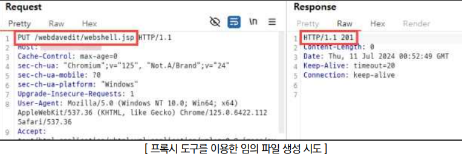
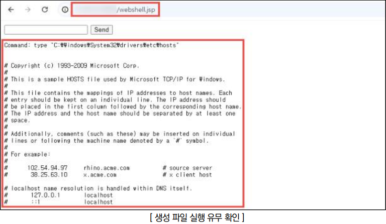
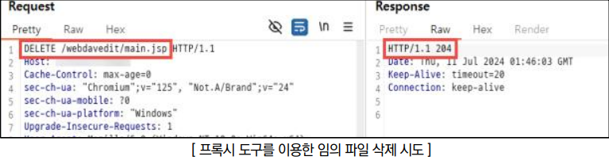

점검 목적
- PUT, DELETE, TRACE 등 불필요한 HTTP 메소드의 악용 여부 확인
- 불필요한 HTTP 메소드(PUT, DELETE, TRACE 등) 요청을 제한하여 서버의 무단 접근 및 악의적인 행위(임의 파일 생성, 데이터 삭제 등)를 방지하기 위함
참고
※ Server Side Script: 웹에서 사용되는 스크립트 언어 중 서버 측에서 실행되는 스크립트
※ XST(Cross-Site Tracing): TRACE 메소드를 악용하여 httpOnly 등으로 보호된 세션 및 쿠키를 탈취할 수 있는 공격 기법
판단 기준
양호 : 웹 애플리케이션에 불필요한 메소드(PUT, DELETE, TRACE, CONNECT 등)로 변조한 요청 패킷 전송 시 해당 메소드를 통하여 임의의 행위로부터 악용이 제한되는 경우
취약 : 웹 애플리케이션에 불필요한 메소드(PUT, DELETE, TRACE, CONNECT 등)로 변조한 요청 패킷 전송 시 해당 메소드를 통하여 임의의 행위에 대한 악용이 가능한 경우
조치 방법
- WEB/WAS의 설정파일을 변경하여 불필요한 메소드의 사용을 제한
점검 방법
Step 1) PUT 메소드를 사용하여 악성 파일(Server Side Script, 악성 스크립트 등) 생성 시도

Step 2) 생성된 악성 파일을 이용하여 웹쉘(Webshell) 업로드, 크로스사이트 스크립팅 등의 공격 수행 가능

Step 3) DELETE 메소드를 사용하여 서버에 저장된 임의의 데이터 삭제 가능

조치 방법
1. PUT, DELETE 메소드를 이용해 파일 생성/삭제가 가능한 WebDAV(Web Distributed Authoring and Versioning) HTTP 확장 프로그램은 비활성화를 권장하며, 부득이하게 사용해야할 경우 망 분리 되어있는 내부망에서 적절한 인증 절차를 거쳐 운용
2. RESTful API 애플리케이션 상의 PUT, DELETE 메소드의 경우 기본적으로 취약하게 설계된 메소드가 아니며, POST 메소드를 통하여 구현하는 것과 동일하게 핵심 비즈니스 로직에 대한 시큐어 코딩을 구현
3. 불필요하게 활성화된 메소드는 비활성화하여 잠재적인 취약점의 최소화를 권장 (웹 서버 설정 파일 구성은 리눅스 OS 내에서도 종류 및 버전에 따라 차이가 있으므로 개발 환경에 맞게 조치)